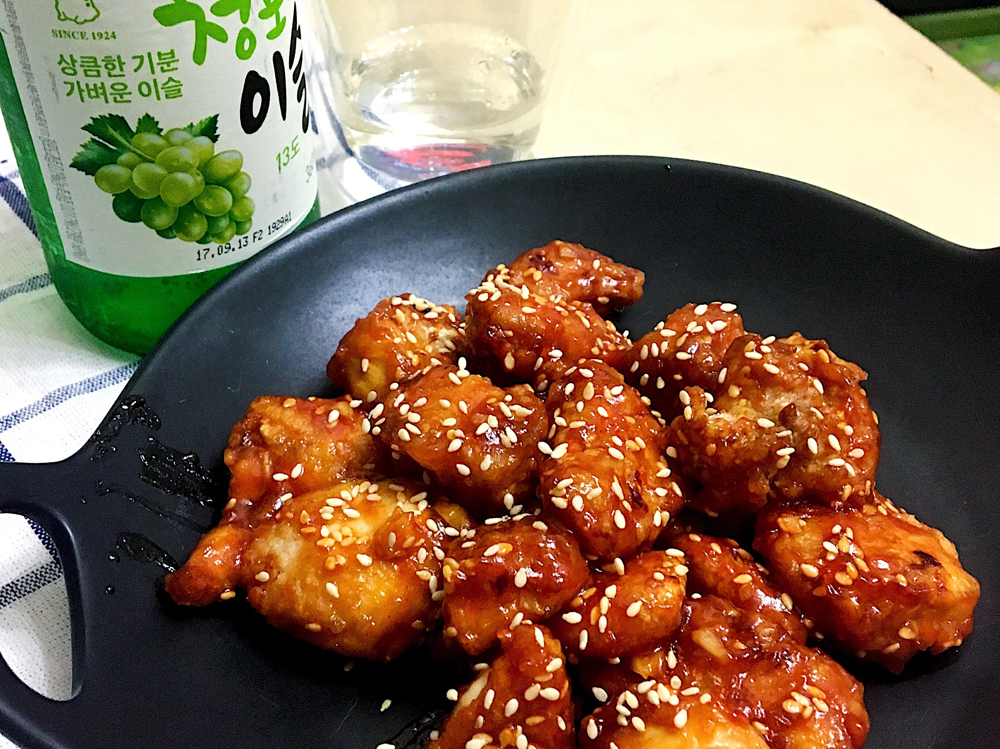
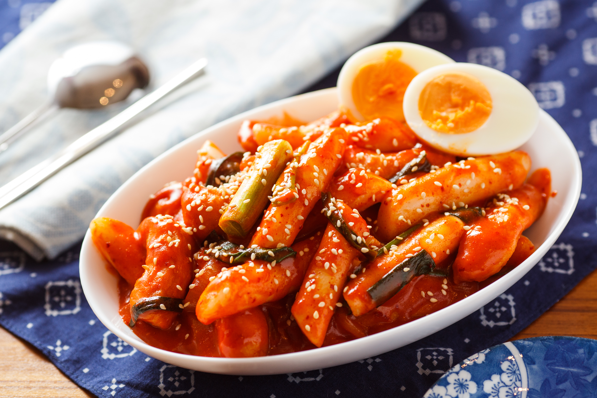
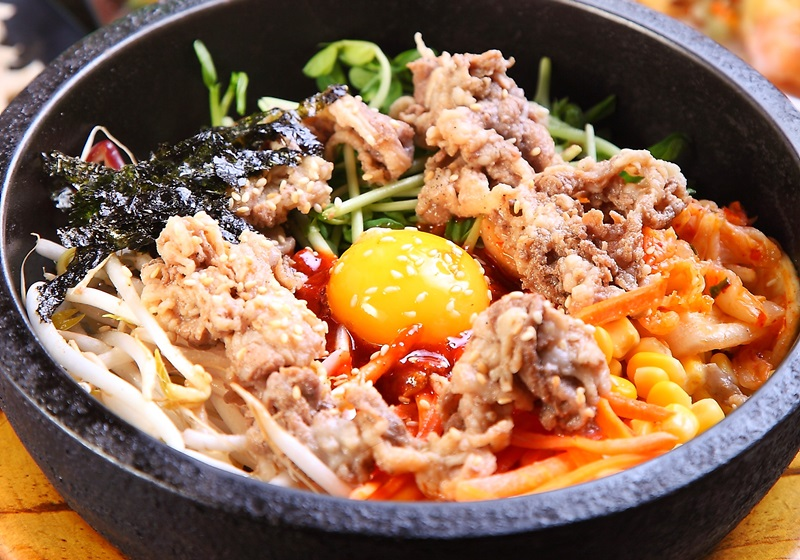
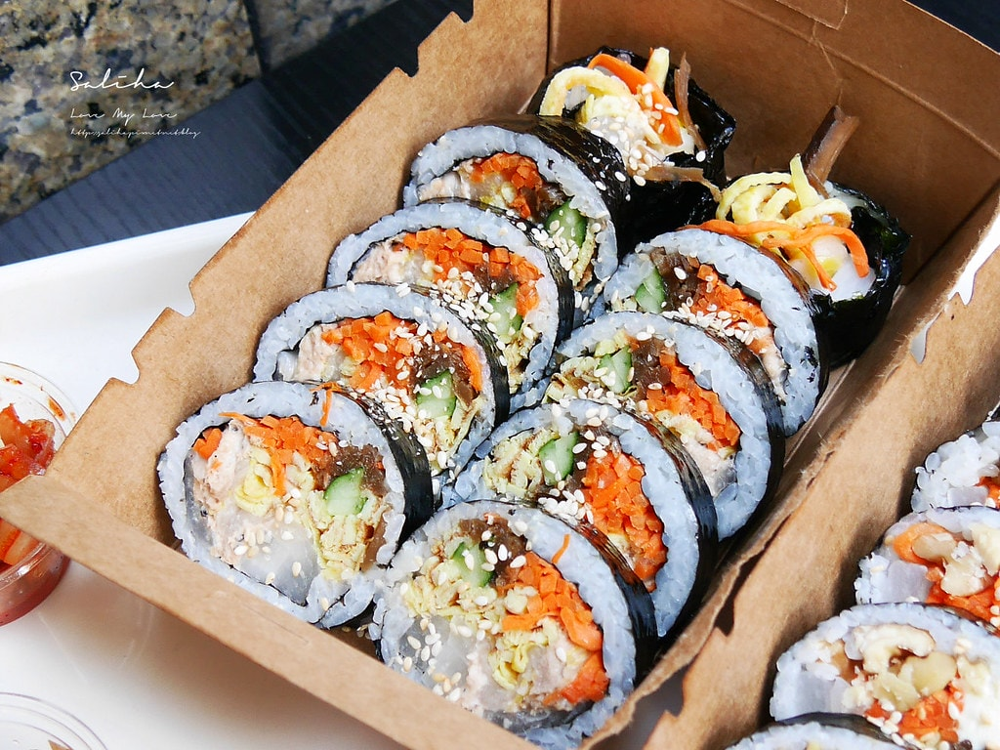

韓國特色美食
從香酥可口的韓式炸雞，到香辣過癮的街頭小吃， 一起探索韓國豐富多元的道地美食！

韓式炸雞
韓式炸雞以外皮酥脆、肉質鮮嫩聞名，常見口味包括原味、甜辣與醬油蒜香。 搭配特製醬汁與醃蘿蔔，口感更加豐富，是韓國聚餐非常受歡迎的經典美食。

辣炒年糕
辣炒年糕是韓國最具代表性的街頭小吃之一， 以Q彈的年糕搭配韓式辣醬烹煮，呈現香辣帶甜的獨特風味。 經常加入魚板、水煮蛋等配料，是逛街時不可錯過的道地美食。

石鍋拌飯
石鍋拌飯是韓國經典的傳統料理，將米飯、蔬菜、肉類與雞蛋放入熱石鍋中， 搭配韓式辣醬拌勻享用。高溫石鍋能讓底部米飯形成香脆鍋巴，增添獨特口感與香氣。

韓式飯捲
韓式飯捲以海苔包裹米飯、雞蛋、蔬菜及肉類等配料，再切成方便食用的小段。 口味清爽、食材豐富且容易攜帶，是韓國日常生活與旅行途中常見的人氣美食。